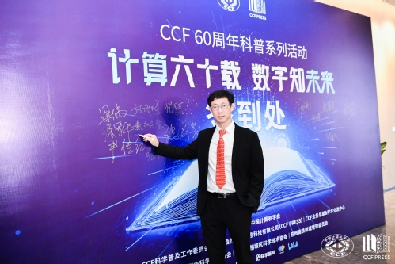
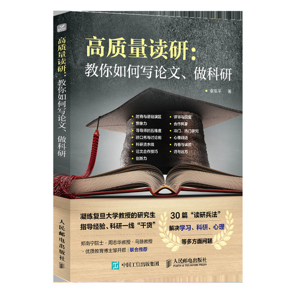
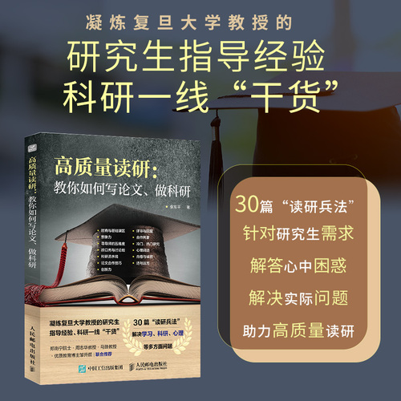

1 斜杠教授·张军平
张军平，复旦大学计算机科学技术学院教授，博士生导师，中国自动化学会普及工作委员会主任、混合智能专委会副主任。主要研究方向包括人工智能、机器学习、图像处理、生物认证、智能交通及气象预测。至今发表论文100余篇，其中IEEE Transactions系列28篇，包括IEEE TPAMI, TNNLS, ToC, TITS, TAC, TIP等。学术谷歌引用近6000次，H指数36。所著的科普读物《爱犯错的智能体》荣获2020年中国科普作家协会第六届优秀作品金奖，这是中国科普创作领域的最高奖项。而2022年6月出版的《高质量读研》面市后即成畅销书，短短两个月已经第六次印刷，销量近15000册。
除了学术上的卓越成就，张军平教授更为人所津津乐道的是他广泛地涉猎。除了撰写科普作品，张军平老师还对音乐有着极大兴趣。由他改编的《成都（湘潭版）》、《GPU的AI》、《急智智能》等作品富有趣味而动听，受到了广泛传播与好评。还被人戏称为“AI届的周杰伦”。他也写过原创歌曲《田园小曲》、《回家》。此外，张军平老师还在B站、小红书、微博等社交媒体上开通了自己的账号，以通俗易懂、风趣幽默的语言为大家讲解科研中、学业中、生活中可能遇到的难题。张军平老师积极地利用社交平台的影响力，贴心而热切地输出自己的观点，受到了大家的喜爱，迄今已累计拥有近六十万粉丝。
作为复旦大学的教授，张军平老师为我们树立了学术和生活中的典范，由此我们策划了本次访谈，希冀给复旦学子们更多的启迪和帮助。

2 访谈时刻·AI届的周杰伦
1. 您为什么会选择人工智能作为您深耕的方向？
张军平：这跟我小时候的兴趣爱好是有关系的。我从小到大最喜欢看的书、还有电影，都是跟科幻相关的。而科幻电影，科幻小说里面，可能讲得最多的就是人工智能相关的内容，这是第一、就是小时候的兴趣。第二，在我中小学的课程里面，我的数学相对来说好一点。而人工智能对数学的要求又比较高，所以这也是我选择的原因之一。还有一点，是我从本科到博士期间学的专业都是自动化专业，它和人工智能也是非常密切相关的，所以这也是我选择人工智能的一个原因。
2. 在您的学习生涯中，是哪些因素促使您选择踏上了科研之路？或者说您踏上科研之路的初衷是什么呢？
张军平：两个原因。第一，是我觉得做科研的话，它其实是可以探索一些未知的世界、领域和知识的。那么这对我来说，我觉得是富有挑战性的，我个人又比较喜欢挑战一些这个我可能目前还暂时做不到，但通过努力还是有可能解决的研究方向。第二个原因，我觉得做科研，相对于企事业单位来看，一是人际关系相对简单，这可能比较符合我的个性，二是，他不是那么的功利和注重短期效益，更看重长期效应，所以这也是我喜欢的一个原因。
3. 您在学术之外的舞台（科普读物领域等）依然有着杰出的成就，您是如何找到自己的这些兴趣的呢？
张军平：科普其实也算是误打误撞，18年科技日报来采访我，让我写生成对抗网，然后我就写了一篇科普文章，后面对深度学习解释，我又写了一篇叫深度学习，就是116岁的长寿老奶奶的一篇文章，这两篇文章的反响还不错，我觉得自己可能在这个方面还是能够做点贡献的，就开始一直持续往下做科普了。除了写文章科普以外，后来慢慢又扩展，通过短视频来做科普了。
4. 你是如何平衡自己的学术与生活（兴趣）的呢？
张军平：我觉得生活中有两个东西比较重要，一个是时商，一个是体商。时商，就是对时间的利用能力，这是需要掌握得比较好的。另外一个是体商，就是你恢复体能的能力，如果你做一天学术研究累得不行，第二天恢复不过来，那你这个商肯定比较差，所以这是两个比较重要的指标。
我觉得自己以前并没有特别好地去平衡学术与兴趣，我会更侧重提升自己的学术能力，比如说15年我出国访问的时候，同宿舍人甚至都不知道我喜欢唱歌。这个兴趣的展开，也是到差不多18年左右才慢慢开始把它展现出来。我觉得我是在科研能力方面已经基本得到大家的认可后，才去表现一下我的一些兴趣爱好的。
5. 这些学术之外的体验与开拓，对您的科研教学或是生活有什么影响吗？
学术之外的体验和开拓，我认为可能最重要的一个好处是它可以让你开拓思维，能从不同的角度去思考一些问题。比如我写的《爱犯错的智能体》，就有很多内容是从不同的角度写出来的。那么它反过来对科研也会有一些好处，因为我觉得视角是一个很重要的因素，做科研的话，如果想做出比较突出的贡献，一定需要有不同于别人的想法，这个时候独特的视角就非常重要。
6. 您培养学生是有着怎样的理念和方法？
张军平：其实培养学生的这个方面我做得不够好，但我坚持一个观点，就是顺其自然，或者说强扭的瓜不甜，或者说“你可以把马带到河边，但你不能够代替马去饮水”。是什么意思呢？就是我觉得作为学生的话，要想把研究做好，首先你自己得努力，然后用兴趣来驱使你去做这个研究。如果什么事情都是需要老师来推的话，那么这个工作一定是做得不好的。


张老师新书 重磅推荐
7. 对于想要平衡学术和兴趣的学生们，您有什么可以分享的建议吗？
张军平：我曾跟学生说过，专业和爱好之间的次序别搞反了。如果需要你印证你的科研能力的时候，你专心去发展爱好，别人会说你不务正业。但如果专业已经做好了，再来点才艺，别人可能会说你多才多艺。所以，我认为在研究生期间的话，适当把时间多投入到能让大家认可你的科研能力方面，会更好一些。
8. 您认为作为计算机科研领域的学生应该具备怎样的基本素质呢？
张军平：第一是要有热情，就对这个研究方向要有特别的执着和爱好。第二是要有一个敏锐的嗅觉，就是能察觉到前沿领域里到底哪些东西是值得做的，哪些东西是不值得做的。但这可能需要花时间去积累，才能形成好的嗅觉。第三是要具有很好的合作精神，因为计算机科研方面很多东西如果单干，其实是不太容易做出很好的成果的。第四的话是要有好的学术诚信。
9. 您认为未来社会更需要什么样的计算机人才？
张军平：未来社会的话，可能需要的人才是斜杠青年这种类型的。像我们学的计算机专业，其实你可以把它称为一个万金油的专业，就是它到各行各业可能都能用上。但是你要具备去到各行各业的可能性，那就意味着你平时要注意一下对很多不同于计算机方面知识的了解，或者说稍微掌握一些相关的技能。这样的话，你就能够拥有斜杠青年的能力了。